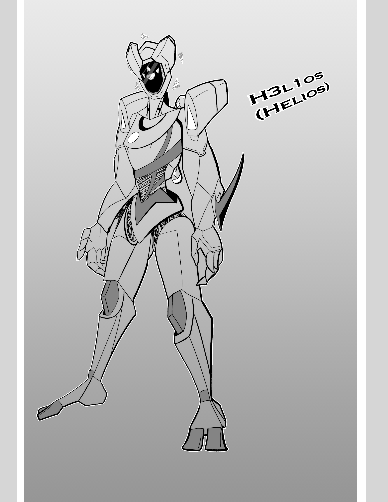

Character Design 4
Arts
Designed a robot or machine character for a CTK character design class. Overall most happy with this design, but I could've simplified it a bit further to make replicating it easier.
04/21/2025
Designed a robot or machine character for a CTK character design class. Overall most happy with this design, but I could've simplified it a bit further to make replicating it easier.
04/21/2025
Tried to designed a human character who is also a witch. Face, head, and hair were pretty solid in my opinion. Everything else could be slightly improved upon. Perhaps something I will revist in the future.
04/21/2025
Overall I think the best designed character I did. A sort of ghostly pirate character with a bit of horror added with the oversized mouth. Despite it being rushed it is arguably the best one out of the bunch
04/21/2025
The one I beleive can be improved the most. I wanted to do a monster alien kind of character with a corrupted look, but it is easily the hardest to replicate and probably the least interesting. Definetly one I will revist.
04/21/2025

For this project we needed to emulate another artist's work. For mine I did Picasso and did a self portait of myself. Overall I am pretty proud of this work as the filter really helps it.
10/22/2024